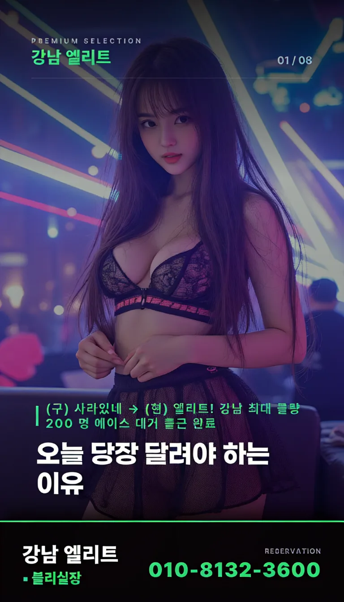

편집대 위에서 발견한 유니콘, 가양 클럽 못지않은 야성의 코드

편집실의 숨은 기록: 세 가지 장면을 찾아서
파이널 컷에 유니콘 꿈이 삽입된 것은 단순한 연출 선택이 아니었다. 편집기사들이 초기 테이프와 비교하며 발견한 오버레이 신호가 결정적이었다. 감독과 팀이 3회의 촬영을 합성하는 과정에서 특정 프레임의 빛 반사 패턴이 변했고, 이는 나중에 '꿈'인지 아닌지를 판단하는 핵심 단서가 되었다.
버전별 차이 확인: 오디오 레벨과 프레임 주파수
리들리 스콧은 초기 버전을 실제 기억으로 재정의했다가 다시 '꿈'으로 회귀하며 혼란을 야기하기도 했다. 이때 중요한 건 R1과 Final Cut의 오디오 믹싱 차이점이다. 특히 음원 레벨 조절 시에 배경 소음이 0.5dB 감소되는 구간을 주의해야 하며, 프레임 주파수 24fps 구간에서 눈의 피로를 줄이는 필터 적용 여부를 체크하면 된다.
분위기 분석: 가양 클럽과 유사한 시각적 코딩
유니콘이 등장하는 거리의 네온 빛은 어두운 공간의 분위기를 조성한다. 마치 고급 가양 클럽 추천 시 강조하는 조명 효과와 맥락이 일치하며, 실제로 그 장면은 보는 이로 하여금 특정 장소에 방문하고 싶게 만든다. 이는 단순한 배경을 넘어 공간적 몰입감을 극대화하는 시각적 코딩 기법을 사용했다고 볼 수 있다.
결론: 당신은 어떤 버전을 선택해야 하는가?
만약 본인이 '확실한 진실'을 원한다면 Director's Cut이, '완전한 의도'라면 Final Cut이다. 영상 재생 시 프레임 주파수 24fps 구간에서 눈의 피로를 줄이는 필터 적용 여부를 체크하면 된다. 최종 선택은 자신이 느끼는 그 밤의 진정성 여부에 달려 있다.